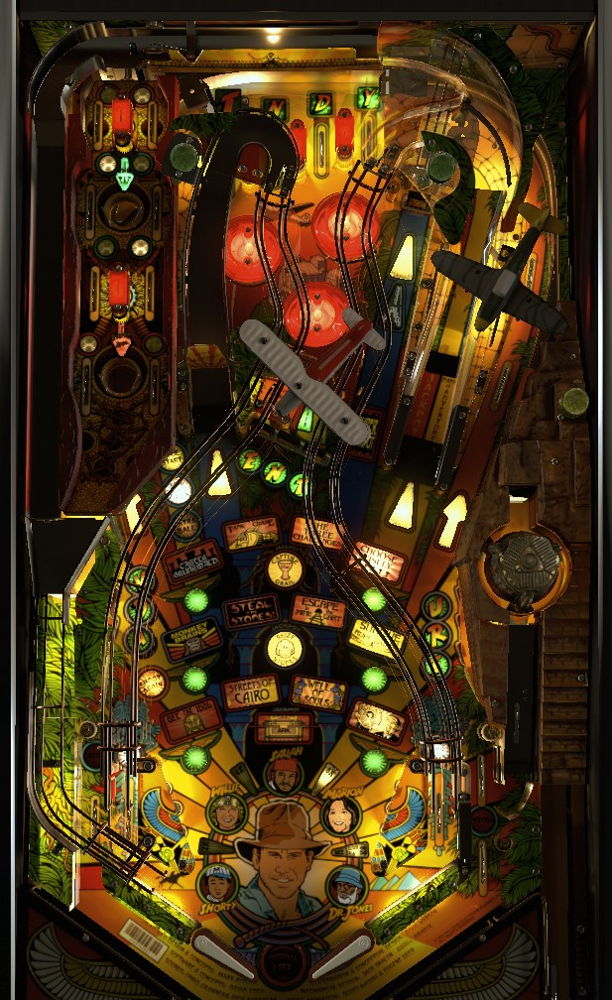

This game is sometimes known as Williams Indiana Jones or Indiana Jones TPA to differentiate it from Indiana Jones (Stern Pinball, 2008).
If playing strictly for points: focus on the points from standard multiball. Hit the E-N-T drop targets in the center of the table to reveal a lock scoop; lock 3 balls for multiball. In multiball, left ramp lights jackpot; relocking balls temporarily multiplies jackpots; right ramp scores jackpots. After 3 jackpots, hit the captive ball just left of the right ramp for super jackpots.
If playing for game progression: the left scoop always starts a mode if no other mode or multiball is running. It should be able to be hit with a very early backhand shot on the left flipper.
There is no skill shot, but the top lanes are pretty important. There are 4 in total that spell Indy. Roll through an unlit lane to light it. Lane change can be used with either flipper to rotate the lit lanes in either direction. Completing the top lanes does three things: advances the bonus multiplier (2x-4x-6x-8x), awards one of Indy's Friends which affects orbit scoring discussed much later in the guide, and relights the in lanes for Light Hand of Fate, which subsequently lights the mode start saucer on the left of the game for a mystery award. Bonus multiplier does generally carry over between balls; advancing bonus multiplier to 8x lights the mode start saucer for an extra ball and causes bonus multiplier to reset to 1x for the next ball.
The main lock saucer is behind the N and T drop targets in the E-N-T bank in the center of the table. If no other multiball is running, shooting a ball into this saucer always scores a lock. The drop targets will re-raise after a lock is made. Locking 3 balls starts multiball.
Multiball rules are similar to the jackpot rules of Fish Tales. The first goal of multiball is to collect 3 jackpots. These three jackpots have a base value of 20,000,000, then 25,000,000, then 30,000,000 points. (Some code revisions have these jackpots at 20,000,000, then 30,000,000, then 40,000,000.) The left ramp or lock saucer lights jackpot; the right ramp collects jackpot. Jackpot base value can be raised in several ways: the mode start saucer and Raise Jackpot target behind the E target add 2,000,000 to the jackpot; the captive ball drop target adds 3,000,000; the captive ball itself adds 5,000,000 for a light hit and 10,000,000 for a full hit. Relocking a ball in the lock saucer will hold it there for 15 seconds, qualifying a double jackpot. If there are 3 balls in play, relocking a second ball in the lock saucer will reset the 15 second clock and qualify a triple jackpot. Letting the 15 seconds expire or collecting a multiplied jackpot releases all relocked balls.
Progress on the three jackpots carries over across multiballs. After 3 jackpots are collected, the Super Jackpot round begins. Super Jackpots are collected as full hits to the captive ball. Super Jackpots can still have their values raised, but they cannot have their value multiplied. The first Super Jackpot has a base value of 80,000,000 points; the second has a base value of 90,000,000 points; starting with the third, all Super Jackpots start at 100,000,000 points. (Some code revisions have these values as 100,000,000, then 125,000,000, then 150,000,000.)
If multiball ends with Super Jackpot lit but before any Super Jackpots are scored, the next multiball will start with Super Jackpot lit. As soon as any Super Jackpots are scored- regardless of how many- the next multiball will reset progress, and the 3 regular jackpots must be collected again to get back to the Supers. There is no quick restart for a multiball that ends before any jackpots of any type are collected.
Indiana Jones has 12 main modes, which must all be played (but not necessarily completed) prior to the special 13th mode, which is Eternal Life wizard mode. If there is no mode or multiball running, the left scoop will always be lit to start the currently flashing mode. Any ramp or orbit shot rotates which mode is flashing. Modes can be brought into multiball. All modes start with a 5,000,000 points bonus just for starting the mode. Scoring earned as a result of main modes is awarded with the end of ball bonus; it is NOT given out immediately. Don't tilt a ball where a lot of modes were played!
The 12 main modes are:
Playing all 12 modes will cause them all to flash on the playfield, and the next shot to the Mode Start saucer will start Eternal Life wizard mode. Eternal Life is a 6-ball multiball with 30 seconds of unlimited ball save. The goal of the game is to hit all 30 major switches on the table before single ball play resumes. This consists of the 4 top lanes, the 8 Path of Adventure switches, the 9 drop targets; the 4 ramps and loops, the mode start saucer, the 2 levels of captive ball switches, and the 2 in lanes. These switches start lit; activating any of them unlights it and scores 10,000,000 points. Collecting all 30 switches scores 1,000,000,000 points and relights all of the switches. Keep working through this process until multiball ends. I do not believe that more ball save is given when the mode restarts itself after paying out the 1,000,000,000 mega jackpot. Once single ball play resumes, the billion chance ends, and all main modes unlight, allowing the entire progression to be played through again.
Hitting the 9 drop targets around the table spells Adventure and lights the right ramp for a trip to the Path of Adventure. The 9 targets are split up into 3 banks. If the A-D-V or U-R-E bank is completed, it will reset, and hitting any drop target in the completed bank will spot a letter you don't have yet. If the E-N-T bank is completed, it stays down so that the lock saucer remains available, but the Raise Jackpot target next to the saucer will spot letters. Once Adventure is completely spelled, the right ramp will be lit and direct the ball to the mini-playfield in the upper left.
The flipper buttons can be used to tilt the upper playfield to the left or right. Each lit rollover lane in the Path of Adventure scores 5,000,000 points, plus an additional 1,000,000 for each time Adventure is completed. At first, there are 2 lit rollover lanes. Roll over a lit lane to unlight it. Unlighting all lit lanes the first time will light the second big hole in the Path of Adventure for an extra ball. After unlighting all lit lanes, a number of lanes will light up again- one more than previous set, maximum of 6 total. Starting with the second Path completion, collecting all the lit lights adds 25,000,000 to the Pit score, which is collected by going down the first hole. The Pit value maxes out at at least 100,000,000 points.
When the ball exits Path of Adventure through any means- either of the two big holes, or the "drain" at the bottom- a 15 second countdown starts, during which time the right ramp can be shot to get the ball back to Path of Adventure again. If ever that timer runs out, the Adventure drop targets must be completed again to reopen the opportunity. If the Adventure targets are completed during standard multiball, the right ramp will only be lit for Path of Adventure after that multiball ends.
In single ball play when no mode is running, the drop target in front of the captive ball will stay down for 20 seconds only after being hit 3 times. Hit the captive ball during these 20 seconds to start a 2-ball Quick Multiball. During Quick Multiball, no modes can be started, but Path of Adventure can be played; the lit rollover lane value is doubled during Quick Multiball. 5 hits to the captive ball during Quick Multiball score 10,000,000, then 15,000,000, then 20,000,000, then 25,000,000, then 30,000,000. Any hit after the 5th scores 40,000,000; the first time a 40,000,000 captive ball is scored, the out lanes will be lit alternately for Special. If a 40,000,000 captive ball is collected, the next Quick Multiball will restart at a value of 10,000,000; otherwise, progress is preserved across multiple plays of Quick Multiball.
As mentioned at the top of the guide, completing the Indy top lanes collects one of Indiana Jones' friends: Shorty, Willie, Sallah, Marion, or Dr Jones. The friend will flash initially; shoot an orbit shot with a lit arrow to light it solidly. Orbits are lit with an arrow for 10 seconds after rolling through the opposite in lane. The value of a lit orbit is 1,000,000 points, plus 2,000,000 for each collected friend, for a maximum of 11,000,000 points. Once all 5 friends are solidly lit, the right ramp is lit for a Loop Jackpot, equal to the sum of all lit orbits collected so far. Supposedly, this jackpot caps at 200,000,000 points, though I have not confirmed this. The Loop Jackpot is not timed and stays lit for the rest of the ball. Collecting the Loop Jackpot or draining the ball when it is lit will unlight all friends and reset the Loop Jackpot back to 0, where it must be built up again from scratch.
Immediately after rolling through an in lane, the opposite ramp will be lit with a yellow triangle for 8 seconds. Make a ramp when it is lit in this fashion to light one of the winged green circles on the playfield. Lighting all 6 immediately starts the Dogfight hurry-up, which starts at 40,000,000 points and counts down to 0 over about 20 seconds. It is collected at the Raise Jackpot target or the lock saucer, both positioned directly behind the E-N-T targets.
Hitting the number of pop bumpers shown on the DMD starts Super Jets, at which point all pop bumpers score 1,000,000 points each for the remainder of the ball in play. The first Super Jets requires 75 bumpers; the second requires 125; after that I assume it goes up 50 each time, but am not sure if there is ever a limit. (Knowing Williams pinballs of this era, there might be a nice bug if the number of bumpers needed for Super Jets ever exceeds 255...)
At the start of the game, both in lanes are lit for Light Hand of Fate. If the in lanes are not lit in this way, completing the Indy top lanes will light them. Rolling through a lit in lane lights the mode start scoop on the left for a Hand of Fate mystery award for 10 seconds. The mystery award can be any of the following:
Indiana Jones: The Pinball Adventure has a mostly conventional in/out lane setup. In lanes light the opposite ramp for Dogfight progress and the opposite orbit for Loop Jackpot progress for a few seconds. Lit in lanes also light the mode start scoop for a Hand of Fate mystery award. Out lanes can be lit for special after collecting a 40,000,000 point captive ball "super jackpot".
Whenever a ball is returned to the playfield after being locked in the center scoop, it will re-enter via the Stone Idol ramp on the far right of the game, even further right than the out lane. This ball will come to the right flipper with speed, skipping over the right out lane and through a one-way gate to reach the right flipper. If a ball is going down the right out lane, it can be nudged back into play off of the post that forms the corner of the right out lane and the Stone Idol ramp exit. Doing so awards a Narrow Escape, which scores 1,000,000 points the first time and an additional 1,000,000 each subsequent time, with no limit that I have ever encountered.
Base bonus is calculated on switch hits and I do not know the exact formula. Base bonus is the only part of bonus that is affected by bonus multiplier, which is most frequently advanced by completing the Indy top lanes but can also be advanced from a Hand of Fate mystery award. All scoring earned in any of the 12 main modes is also added to the end of ball bonus, which means the bonus can regularly be in the hundreds of millions of points, and tilting is almost always a very bad idea. There is no bonus holdover or mid ball bonus collect. Bonus multiplier is held from ball to ball unless it is maxed out at 8x.
The game manual indicates that a special is worth 1,000,000 points in competition/novelty play. This seems incredibly low and I expect it to be incorrect, as it is in several other mid-90s Williams manuals. 100,000,000 points would probably be a better award for a Special. I am not aware of any setting that allows extra balls to be assigned a point value.
Most timers in the game are adjustable.
The first Super Jets can require 1-255 hits. Default 75. Difficulty presets vary from 50-100.
Brief ball savers can be turned on (~2 seconds each) for balls that drain in the left out lane immediately after hitting a center drop target, or for balls that drain out the right out lane when being released from the Stone Idol ramp on the right.